Kapitel:
Datenmodellierung
Architektur
Datentypen
SQL-DDL
SQL-DML
SQL-Functions
Data Dictionary
Datenmodellierung
Anforderung
- Anforderungen an Datenbanken
Beliebig erweiterbar
- Beliebige Anzahl von Attributswerten
- Bsp.: Anzahl der Kinder einer Familie
Jede Information nur einmal speichern
- Änderungen von Daten nur an einer Stelle durchführen
- Vermeidung von Dateninkonsistenz
- Widerspruchsfreiheit
Jeder Datensatz muß eindeutig referenzierbar sein
- Einführung eines Primärschlüssels
- Anforderungen an das relationale Modell
Die Reihenfolge der Spalten ist unerheblich. Jede Spalte in einer Relation muß aber einen unterschiedlichen
Attributtypnamen besitzen.
Die Reihenfolge von Zeilen ist unerheblich. Zeilen sollen vertauscht werden können, ohne daß der
Informationsgehalt von Tabellen dadurch berührt wird.
Am Schnittpunkt einer Zeile mit einer Spalte darf jeweils nur ein einziger und einfacher Attributwert
stehen. Mehrere Werte sind unzulässig.
Normalisierung
- Normalform
Eine Tabelle ist in erster Normalform (1NF), wenn in jeder Tabellenposition immer nur ein Wert steht,
niemals eine Liste von Werten
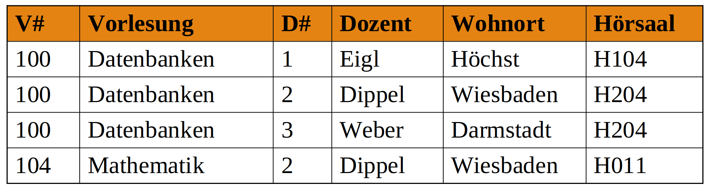
- Normalform
Eine Tabelle ist in zweiter Normalform (2NF), wenn sie in erster Normalform ist und jedes Nicht -
Schlüsselattribut vom Primärschlüssel voll funktional abhängig ist.
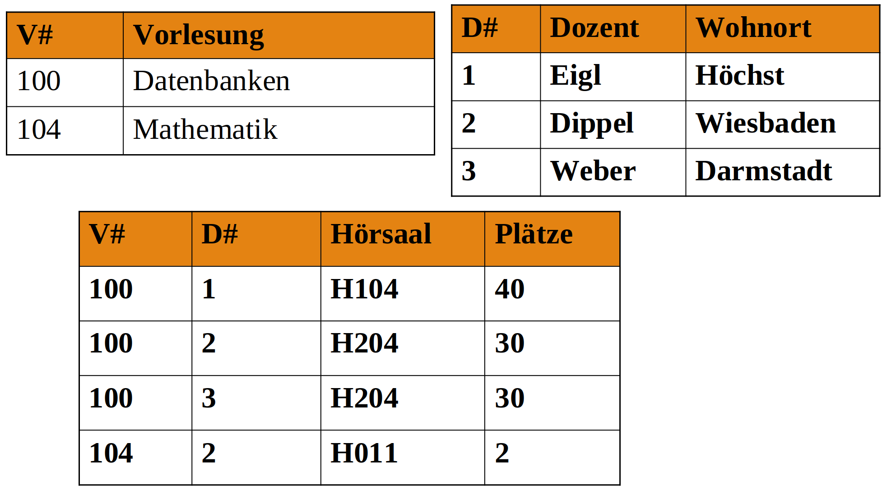
- Normalform
Eine Tabelle ist in dritter Normalform (3NF), wenn sie in zweiter Normalform ist und jedes Nicht
Schlüsselattribut nicht transitiv ist, also direkt vom Primärschlüssel abhängt.
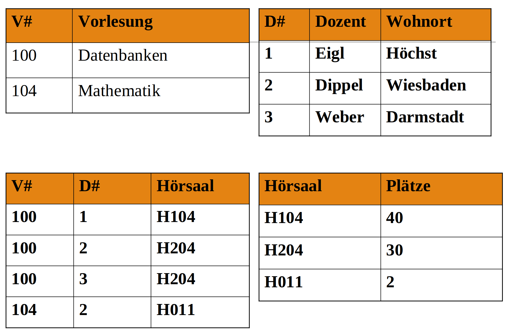
Beziehungen
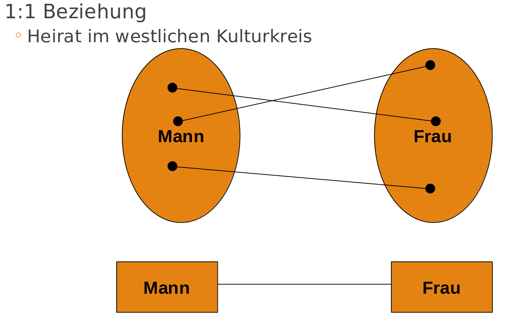
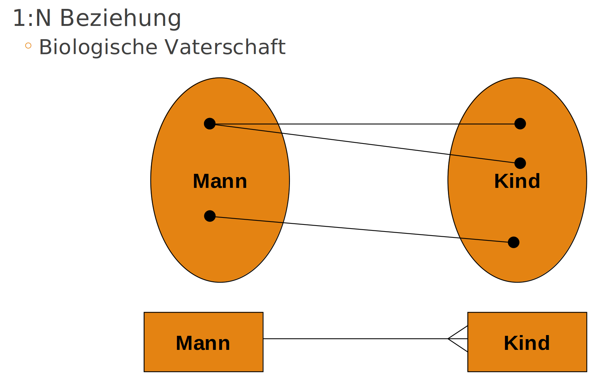
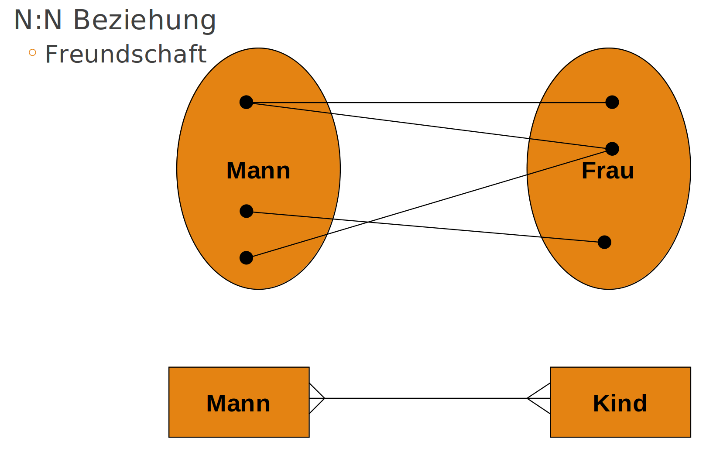
ER - Modellierung
Begriffe
- Entität
Eine Entität ist ein individuelles und identifizierbares Exemplar von Dingen, Personen oder Begriffen der
realen oder Vorstellungswelt und wird durch Eigenschaften beschrieben.
Eine Entitätsmenge oder Entitätstyp ist eine Zusammenfassung von Entitäten mit gleichen Eigenschaften unter
einem eindeutigen gemeinsamen Oberbegriff
- Attribut
Ein Attribut beschreibt eine fachliche Eigenschaft, die allen Entitäten einer Entitätsmenge gemeinsam ist.
Es darf für eine Entität zu jedem Zeitpunkt immer nur einen Wert annehmen und dieser Wert darf nur von der
Entität selbst abhängig sein.
- Primärschlüssel
Ein Primärschlüssel ist eine minimale, identifizierende Attributkombination einer Entität.
- Assoziation
Wechselwirkungen und Abhängigkeiten zwischen Entitäten werden durch Beziehungen (Relationen) dargestellt.
Die Zusammenfassung gleichartiger Beziehungen wird Beziehungsmengen (Assoziationen) genannt.
Vom Modell zur Tabellenstruktur
Entitäten umwandeln
- Jede Entität wird zu einer Tabelle
Attribute umwandeln
- Jedes Attribut wird zu einer Spalte der Tabelle
Relationen umwandeln
- 1:1 Aus den beiden Tabellen wird eine Tabelle
- 1:N Der Primärschlüssel der einen Tabelle wird als Fremdschlüssel in die andere Tabelle aufgenommen
- N:N Es wird eine zusätzliche Zuordnungstabelle erstellt
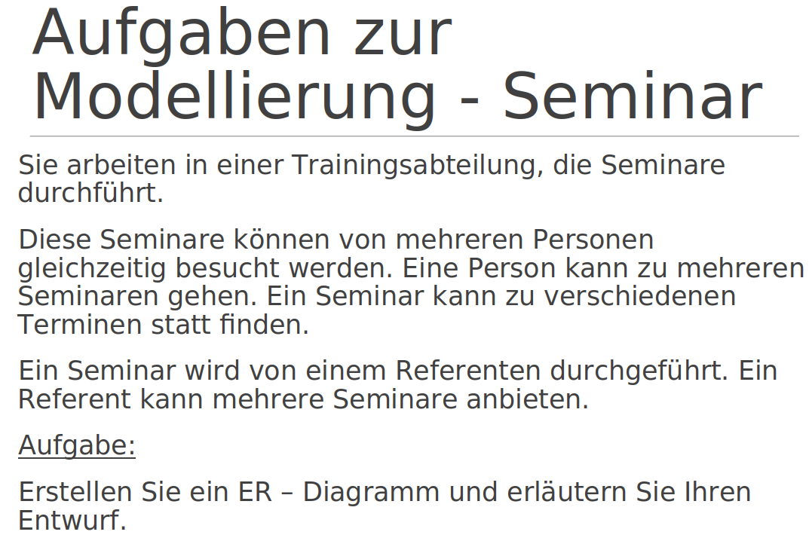
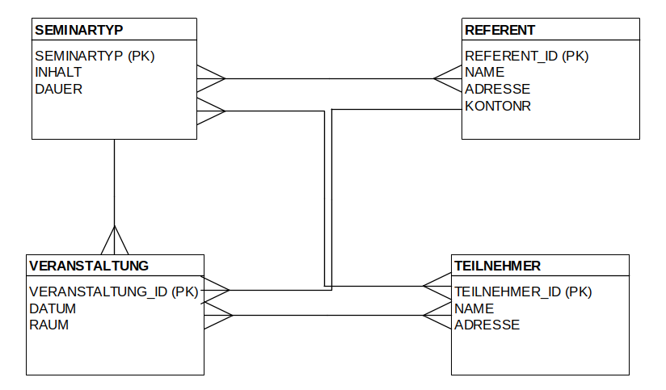
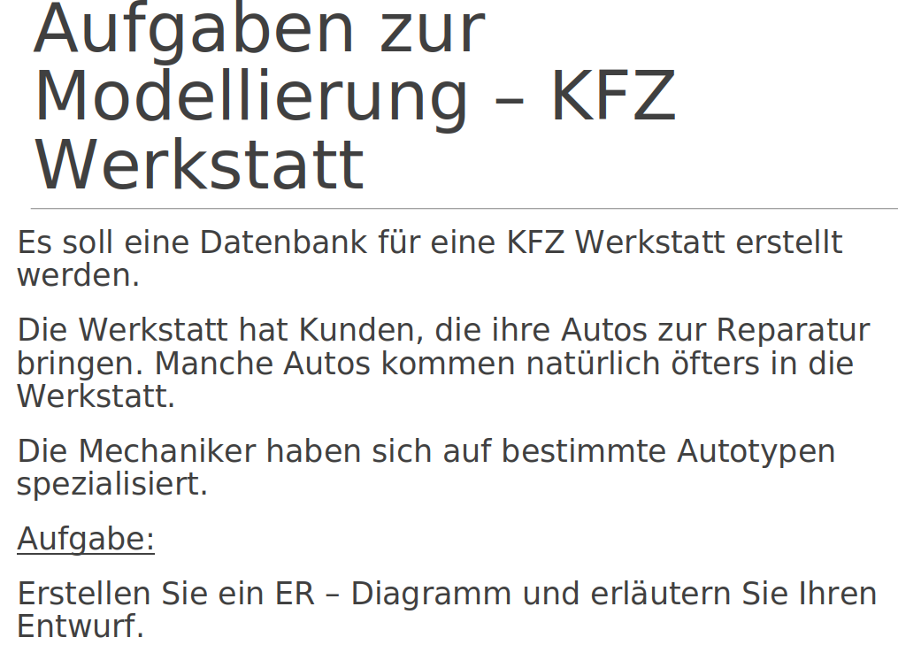
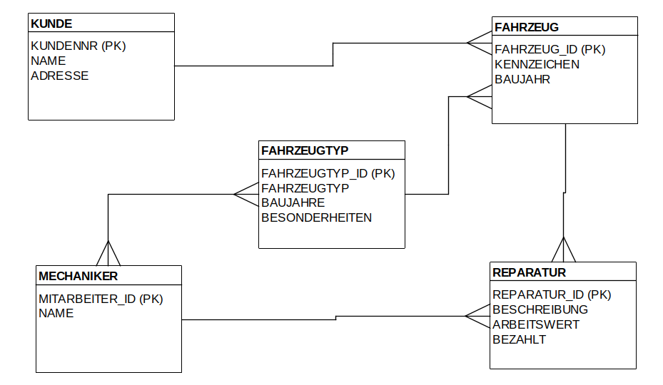
Architektur
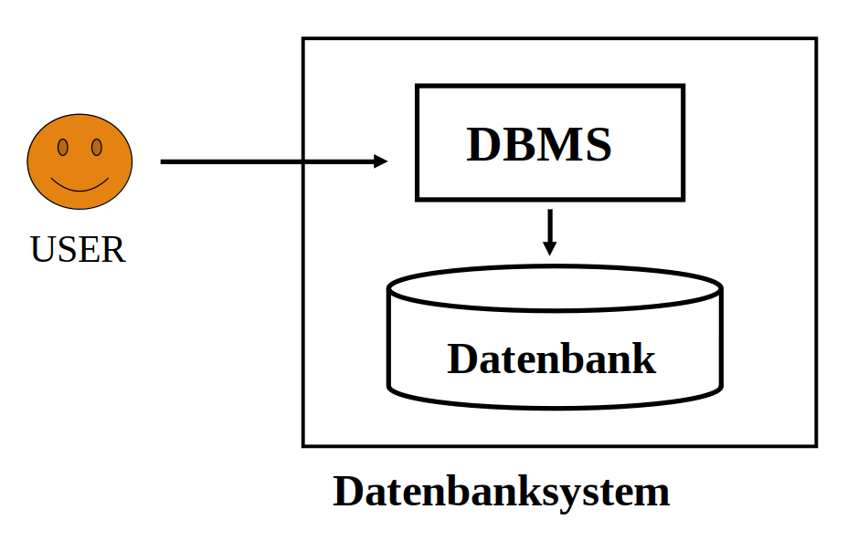
Datenbank-Managementsystem
Ein Datenbank-Managementsystem (DBMS) ist eine Software, die es ermöglicht, Daten in einer Datenbank zu speichern,
zu organisieren und abzufragen. Sie bietet Funktionen zum Erstellen, Bearbeiten und Verwalten von Datenbanken und
bietet Benutzern und Anwendungen Zugriff auf die darin enthaltenen Daten. Ein DBMS hilft dabei, die Integrität der
Daten in der Datenbank zu gewährleisten und sie vor unerwünschtem Zugriff oder Veränderungen zu schützen. Es gibt
verschiedene Arten von DBMS, wie relationale Datenbanken, NoSQL-Datenbanken und objektorientierte Datenbanken, die
je nach Anwendungsfall verwendet werden können.
Datenbank
Eine Datenbank ist ein System zur speicherung und Verwaltung von Daten. Es gibt verschiedene Arten von Datenbanken,
wie zum Beispiel relationale Datenbanken, NoSQL-Datenbanken und objektorientierte Datenbanken. Eine Datenbank
besteht in der Regel aus mehreren Tabellen, die Daten speichern, und ist in der Lage, diese Daten schnell und
effizient abzufragen und zu bearbeiten. Die Verwendung von Datenbanken ermöglicht es, Daten zu organisieren und zu
strukturieren, um sie leichter abrufen und verarbeiten zu können.
Datenbanksystem
Ein Datenbanksystem ist eine Software, die dafür sorgt, dass Daten auf einem Computer oder in einem Netzwerk
organisiert und gespeichert werden. Es ermöglicht es Benutzern, Daten zu speichern, zu bearbeiten und abzufragen.
Ein Datenbanksystem verwendet eine spezielle Datenbank-Sprache, um Anfragen zu verarbeiten, und bietet meist auch
eine grafische Benutzeroberfläche, um die Interaktion mit der Datenbank zu erleichtern. Datenbanksysteme sind
wichtig, weil sie es ermöglichen, große Mengen an Daten zu speichern und zu verwalten, und weil sie schnelle und
zuverlässige Abfragen ermöglichen, die für viele Anwendungen erforderlich sind.
OLTP & OLAP
- OLTP
OLTP steht für "Online Transaction Processing", was bedeutet, dass es sich um ein System zur Verarbeitung
von Transaktionen in Echtzeit handelt. Im Gegensatz zu OLAP (Online Analytical Processing), das auf die
Analyse von Daten ausgerichtet ist, ist OLTP darauf ausgelegt, eine hohe Anzahl von kurzen Transaktionen
schnell und zuverlässig zu verarbeiten. Beispiele für OLTP-Anwendungen sind die Buchung von Flügen oder
Hotels über das Internet, die Bearbeitung von Kreditkartenabrechnungen oder die Verarbeitung von
Bestellungen in einem E-Commerce-Shop. OLTP-Systeme müssen in der Regel sehr schnell sein, da sie oft von
vielen Benutzern gleichzeitig genutzt werden und jede Transaktion innerhalb weniger Sekunden abgeschlossen
werden muss.
- OLAP
OLAP steht für "Online Analytical Processing". Es handelt sich um eine Klasse von Software-Tools, die es
ermöglichen, große Mengen von Daten zu analysieren und zu manipulieren, um daraus Erkenntnisse zu gewinnen
und Entscheidungen zu treffen. Im Gegensatz zu OLTP (Online Transaction Processing), das auf die schnelle
Verarbeitung von Transaktionen ausgerichtet ist, ist OLAP darauf ausgelegt, komplexe Analysen von Daten
durchzuführen, die möglicherweise aus verschiedenen Quellen stammen. Beispiele für OLAP-Anwendungen sind die
Analyse von Verkaufsdaten, die Überwachung von Finanzkennzahlen oder die Analyse von Kundenverhaltensmuster.
OLAP-Systeme verwenden in der Regel spezielle Datenbanken, die als "OLAP-Cube" bezeichnet werden und die es
ermöglichen, Daten auf verschiedene Arten zu gruppieren und zu analysieren.
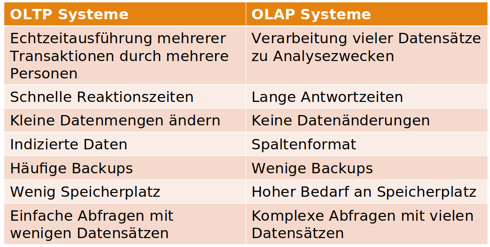
Data Warehouse
Ein Data Warehouse ist eine spezielle Art von Datenbank, die für das Sammeln und Verarbeiten von großen Mengen von
Daten aus verschiedenen Quellen entwickelt wurde. Es wird verwendet, um Unternehmensdaten zu integrieren und zu
analysieren, um bessere Geschäftsentscheidungen zu treffen. Ein Data Warehouse enthält in der Regel historische
Daten, die für längere Zeiträume aufbewahrt werden, und wird häufig von BI- (Business Intelligence) -Tools und
-Anwendungen verwendet, um Berichte und Analysefunktionen zu erstellen. Im Gegensatz zu herkömmlichen Datenbanken,
die für Transaktionen und die Verarbeitung von aktuellen Daten optimiert sind, ist ein Data Warehouse für die
Analyse von historischen Daten ausgelegt und wird daher häufig als "passiv" betrachtet, da keine Schreibvorgänge
stattfinden.
DataMart
Ein DataMart ist eine Art von Datenbank, die speziell für das Berichtswesen und die Analyse von Daten entwickelt
wurde. Es ist in der Regel ein Teil eines größeren Data Warehouse-Systems und ist auf die Bedürfnisse einer
bestimmten Abteilung oder eines Geschäftsbereichs ausgerichtet. DataMarts enthalten oft eine Unterselektion der
Daten aus dem Data Warehouse und sind für die schnellere Abfrage von Daten optimiert. Sie werden häufig verwendet,
um spezifische Anforderungen von Benutzern oder Anwendungen innerhalb einer Organisation zu unterstützen.
- Bessere Performance
- Sicht der Benutzer nur auf eigene Daten
- Evt. Spezielle Datenstrukturen
ETL System-User der ORACLE-Datenbank
ETL steht für "Extract, Transform, Load" und bezieht sich auf die Prozesse, die bei der Integration von Daten aus
verschiedenen Quellen in ein Data Warehouse oder eine andere Datenbank verwendet werden. ETL-Systeme sind spezielle
Anwendungen oder Tools, die entwickelt wurden, um diese Prozesse automatisch durchzuführen.
Ein ETL-System-User der ORACLE-Datenbank ist eine Person, die mit dem ETL-System arbeitet, um Daten aus der
ORACLE-Datenbank zu extrahieren, zu transformieren und in ein Data Warehouse oder eine andere Zieldatenbank zu
laden. Diese Person ist für die Konfiguration und den Betrieb des ETL-Systems verantwortlich und arbeitet
möglicherweise auch an der Gestaltung der ETL-Prozesse und -Workflows.
Speicherstruktur
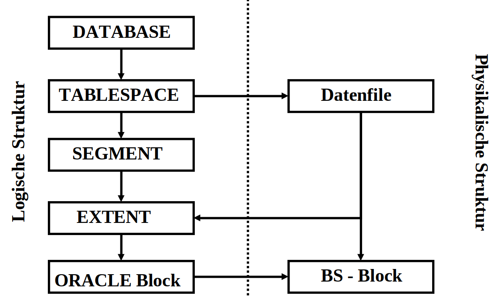
Jeder Benutzer erhält einen logischen Speicherbereich in dem er Objekte
erzeugen kann.
In der Datenbank werden logische Einheiten angelegt, die als TABLESPACE
bezeichnet werden. Jeder Tablespace kann aus mehreren Dateien bestehen.
In diesen Tablespaces werden die erzeugten Objekte (z.B. Tabellen) gespeichert.
Jedes erzeugte Objekt z.B. eine Tabelle belegt ein Segment innerhalb eines
Tablespaces. Das Segment kann Platz in mehreren Dateien belegen.
Jedes Segment kann aus mehreren Extends bestehen. Jedes Extend ist ein
Speicherbereich innerhalb einer einzigen Datei. Ein Extend besteht aus
mehreren Datenblöcken
Inhalt von Datenfiles
- Tabellen, Indizes
- Data Dictionary
- Sequences, stored Procedures/Functions
- Temporary Segment
- Rollback Segment
- LOB Segment
Datentypen
Wichtigste Datentypen
- NUMBER
NUMBER ist der Datentyp für numerische Werte. NUMBER kann für ganze Zahlen oder Dezimalwerte verwendet
werden
und kann eine feste oder variable Anzahl von Dezimalstellen haben.
Syntax: NUMBER [(p[,s])]
p {1..38} gesamte Stellen s {-84..127} Nachkommastellen
max Speicherbedarf 22 Bytes
- VARCHAR2
VARCHAR2 der Datentyp für Zeichenketten (strings). VARCHAR2 kann verwendet werden, um Textdaten jeglicher
Länge zu speichern, und hat eine maximale Länge von 4.000 Zeichen.
Syntax: VARCHAR2( size )
max(size)=4000
oder 32767 wenn MAX_STRING_SIZE=EXTENDED
- CLOB
CLOB ist ein Datentyp, der zur Speicherung von großen Zeichenfolgen, sogenannten CLOBs (Character
Large OBjects), verwendet wird. CLOBs können Zeichenfolgen mit einer Länge von bis zu 128 Terabyte
speichern. Sie werden häufig verwendet, um große Mengen von Text, wie zum Beispiel Artikel oder Dokumente,
in einer Datenbank zu speichern. Der CLOB-Datentyp ist in der Regel besser geeignet als der
VARCHAR2-Datentyp, wenn es darum geht, große Mengen von Text zu speichern, da er eine größere
Speicherkapazität hat.
Syntax: CLOB
max. Grösse (4GB-1)*(database block size)
- DATE
DATE ein Datentyp, der zur Speicherung von Datums- und Uhrzeitangaben verwendet wird. Der DATE-Datentyp
enthält das Jahr, den Monat, den Tag, die Stunde, die Minute und die Sekunde.
Syntax: DATE
interne Darstellung als Zahl. Länge maximal 7 Bytes
von 1.1.4712 BC bis 31.12.9999 AD
enthält Tag,Monat,Jahr,Stunde,Minute,Sekunde
- TIMESTAMP
TIMESTAMP ist ein Datentyp, der Datum und Uhrzeit speichern kann. Er hat eine höhere
Genauigkeit als der Datentyp DATE, da er neben dem Datum auch die Uhrzeit bis auf die Sekunden präzise
speichern kann.
Syntax: TIMESTAMP [(fractional_seconds_precision)]
fractional_seconds_precision {0..9}
Formatierung Datentyp NUMBER
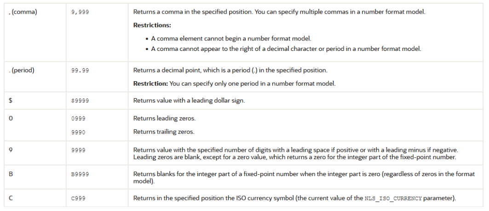
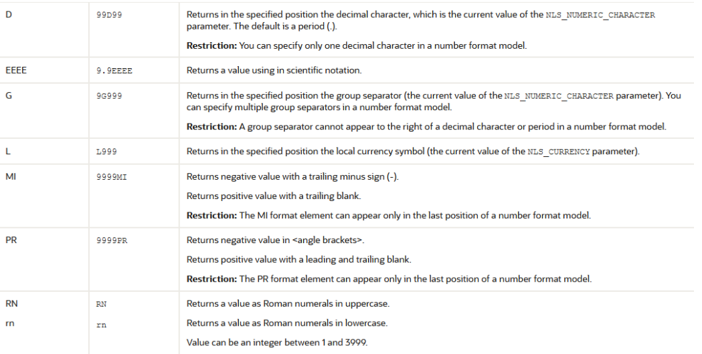
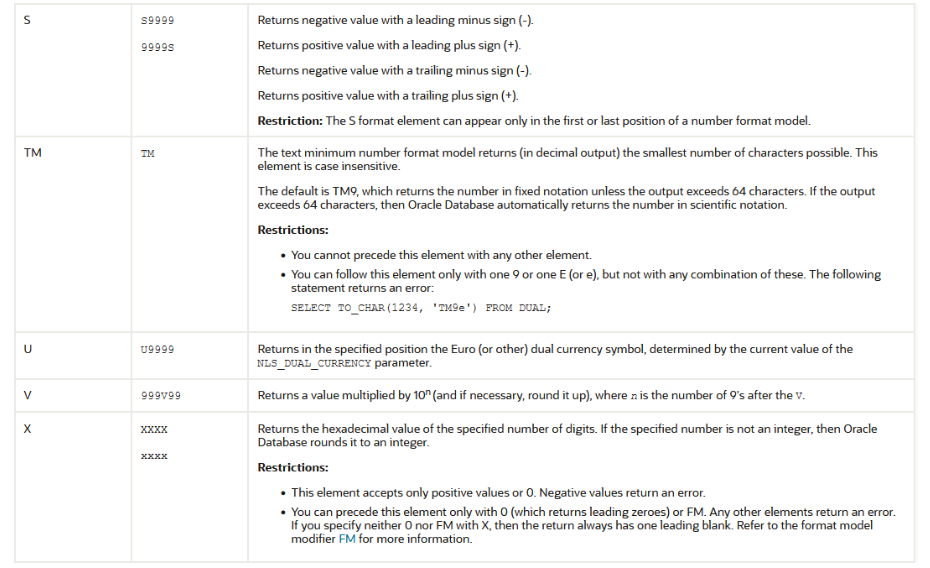
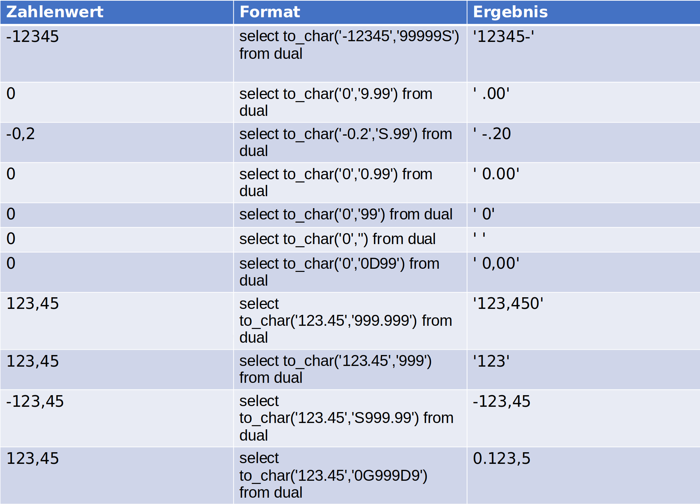
Formatierung Datentyp DATE und TIMESTAMP
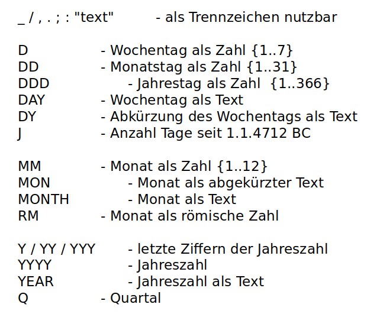
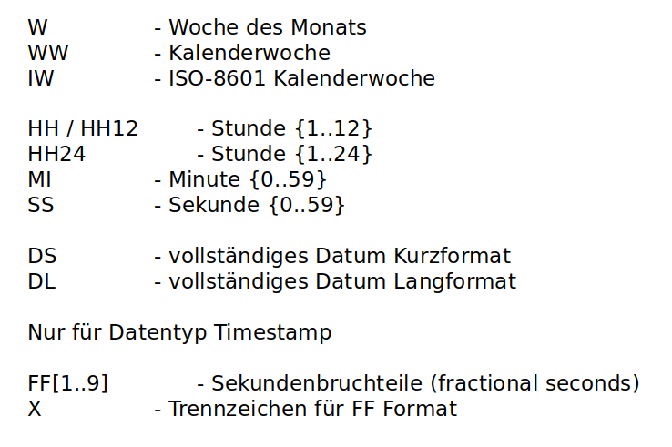
SQL-DDL
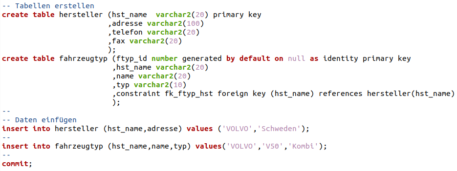
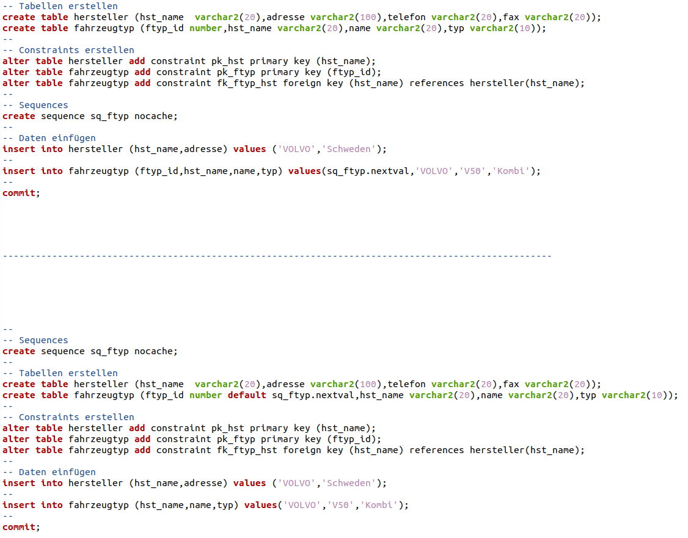
SQL-DML
SELECT
Die SELECT-Anweisung wird verwendet, um Datensätze aus einer oder mehreren Tabellen in einer Oracle-Datenbank
abzurufen.
Syntax
SELECT expressions
FROM tables
[WHERE conditions];
Beispiel
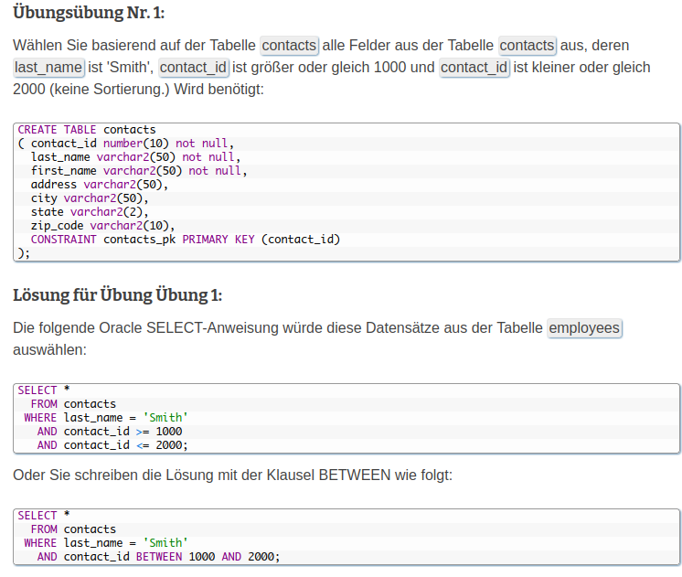
INSERT
Die Oracle-Anweisung INSERT wird verwendet, um einen einzelnen Datensatz oder mehrere Datensätze in eine Tabelle in
Oracle einzufügen.
Syntax
INSERT INTO table
(column1, column2, ... column_n )
VALUES
(expression1, expression2, ... expression_n );
Beispiel
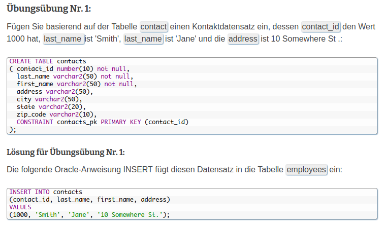
UPDATE
Mit der Oracle UPDATE-Anweisung werden vorhandene Datensätze in einer Tabelle in einer Oracle-Datenbank
aktualisiert. Es gibt zwei Syntaxen für eine Aktualisierungsabfrage in Oracle, je nachdem, ob Sie eine herkömmliche
Aktualisierung durchführen oder eine Tabelle mit Daten aus einer anderen Tabelle aktualisieren.
Syntax
UPDATE table
SET column1 = expression1,
column2 = expression2,
...
column_n = expression_n
[WHERE conditions];
Beispiel
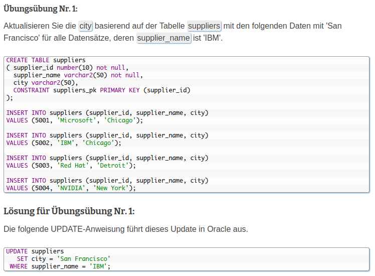
DELETE
Die Oracle-Anweisung DELETE wird zum Löschen eines einzelnen Datensatzes oder mehrerer Datensätze aus einer Tabelle
in Oracle verwendet.
Syntax
DELETE FROM table
[WHERE conditions];
Beispiel
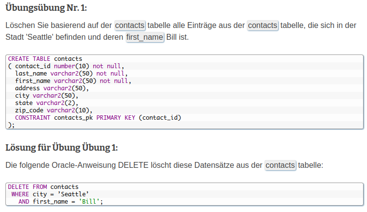
TRUNCATE
Mit der SQL-Anweisung TRUNCATE TABLE werden alle Datensätze aus einer Tabelle entfernt. Es hat die gleiche Funktion
wie eine DELETE Anweisung ohne eine WHERE-Klausel.
Warnung: Wenn Sie eine Tabelle abschneiden, kann die Anweisung TRUNCATE TABLE in einigen Datenbanken nicht
zurückgerollt werden.
Syntax
TRUNCATE TABLE Tabelle_name;
Beispiel
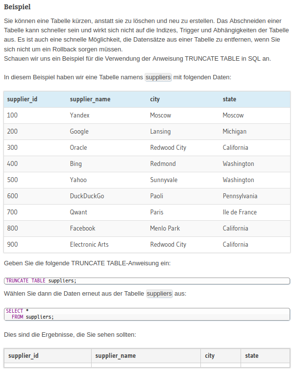
GROUP BY
Die SQL GROUP BY Klausel kann in einer SELECT-Anweisung verwendet werden, um Daten über mehrere Datensätze hinweg zu
erfassen und die Ergebnisse nach einer oder mehreren Spalten zu gruppieren.
Syntax
SELECT Ausdruck1, Ausdruck2, ... Ausdruck_n,
Aggregatfunktion (Aggregat_Ausdruck)
FROM Tabellen
[WHERE Bedingungen]
GROUP BY Ausdruck1, Ausdruck2, ... Ausdruck_n
[ORDER BY Ausdruck [ ASC | DESC ]];
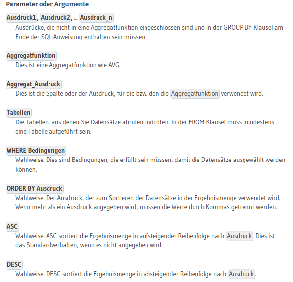
HAVING bedingung
Dies ist eine weitere Bedingung, die nur auf die aggregierten Ergebnisse angewendet wird, um die Gruppen der
zurückgegebenen Zeilen einzuschränken. Nur die Gruppen, deren Bedingung TRUE ergibt, werden in die Ergebnismenge
aufgenommen.
Gibt auch noch IS NULL & IS NOT NULL.
Beispiel
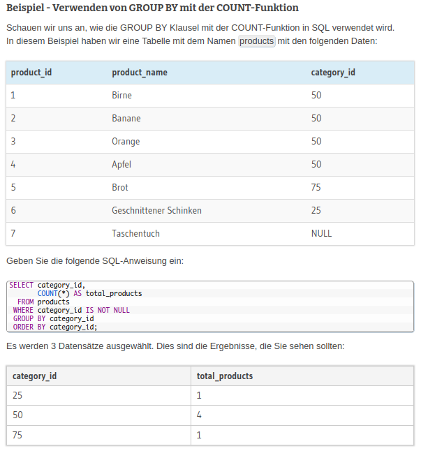
SQL-Functions
- DECODE()
Die DECODE-Funktion hat die Funktionalität einer IF-THEN-ELSE-Anweisung.
Syntax:
DECODE( expression , search , result [, search , result]... [, default] )
- TRUNC(Number)
Die TRUNC-FOR-NUMBER-Funktion gibt eine Zahl zurück, die auf eine bestimmte Anzahl von
Dezimalstellen abgeschnitten ist.
Syntax:
TRUNC( number, [ decimal_places ] )
- TRUNC(Date)
Die TRUNC-FOR-DATE-Funktion gibt ein Datum zurück, das auf eine bestimmte Maßeinheit gekürzt
wurde.
Syntax:
TRUNC ( date, [ format ] )
- ROUND()
Die ROUND-FOR-NUMBER-Funktion gibt eine auf eine bestimmte Anzahl von Dezimalstellen gerundete
Zahl zurück.
Syntax:
ROUND( number, [ decimal_places ] )
- LENGTH()
Die LENGTH-Funktion gibt die Länge der angegebenen Zeichenfolge zurück.
Syntax:
LENGTH( string1 )
- SUBSTR()
Die SUBSTR-Funktion können Sie eine Teilzeichenfolge aus einer Zeichenfolge extrahieren.
Syntax:
SUBSTR( string, start_position, [ length ] )
- INSTR()
Die INSTR-Funktion gibt den Speicherort einer Teilzeichenfolge in einer Zeichenfolge zurück.
Syntax:
INSTR( string, substring [, start_position [, nth_appearance ] ] )
- TRIM()
Die TRIM-Funktion entfernt alle angegebenen Zeichen entweder am Anfang oder am Ende einer
Zeichenfolge.
Syntax:
TRIM( [ [ LEADING | TRAILING | BOTH ] trim_character FROM ] string1 )
- NVL()
Die NVL-Funktion können Sie einen Wert ersetzen, wenn ein Nullwert auftritt.
Syntax:
NVL( string1, replace_with )
- REPLACE()
Die REPLACE-Funktion ersetzt eine Zeichenfolge in einer Zeichenfolge durch eine andere Zeichenfolge.
Syntax:
REPLACE( string1, string_to_replace, [ replacement_string ] )
Data Dictionary
USER_CONSTRAINTS
USER_CONSTRAINTS ist eine View in Oracle's PL/SQL, die Informationen über Constraints in den Tabellen im aktuellen
Benutzer-Schema enthält. Constraints sind Regeln, die in der Datenbank festgelegt werden, um sicherzustellen, dass
die Daten, die in den Tabellen gespeichert werden, korrekt und sinnvoll sind. Es gibt verschiedene Arten von
Constraints, wie zum Beispiel NOT NULL, UNIQUE und FOREIGN KEY.
Die USER_CONSTRAINTS View enthält mehrere Spalten, die Informationen über den Constraint enthalten, wie zum
Beispiel:
- CONSTRAINT_NAME: Der Name des Constraints.
- TABLE_NAME: Der Name der Tabelle, in der sich der Constraint befindet.
- CONSTRAINT_TYPE: Der Typ des Constraints (z.B. NOT NULL, UNIQUE, FOREIGN KEY usw.).
- SEARCH_CONDITION: Die Bedingung, die von dem Constraint verwendet wird, um sicherzustellen, dass die Daten, die in
die Tabelle eingefügt werden, korrekt sind.
USER_CONS_COLUMNS
USER_CONS_COLUMNS ist eine View in Oracle's PL/SQL, die Informationen über Spalten in Tabellen enthält, die von den
Constraints in der aktuellen Benutzer-Schema abhängen. Die View enthält mehrere Spalten, die Informationen über den
Constraint und die abhängige Spalte enthalten. Sie können die View verwenden, um die Constraints in Ihrem Schema zu
überprüfen oder Informationen über abhängige Spalten in Ihren Tabellen zu erhalten.
Hier sind einige Beispiele für Spalten, die in der USER_CONS_COLUMNS View enthalten sein können:
- TABLE_NAME: Der Name der Tabelle, in der sich der Constraint befindet.
- COLUMN_NAME: Der Name der Spalte, die von dem Constraint abhängt.
- CONSTRAINT_NAME: Der Name des Constraints.
- POSITION: Die Position der Spalte in dem Constraint.
- DELETE_RULE: Die Regel, die angibt, was passieren soll, wenn ein Versuch unternommen wird, einen Eintrag mit dem
Constraint zu löschen.
USER_TABLES
USER_TABLES ist eine View in Oracle's PL/SQL, die Informationen über die Tabellen enthält, die im aktuellen
Benutzer-Schema vorhanden sind. Die View enthält mehrere Spalten, die Informationen über die Tabellen enthalten, wie
zum Beispiel:
- TABLE_NAME: Der Name der Tabelle.
- TABLESPACE_NAME: Der Name des Tablespaces, in dem sich die Tabelle befindet.
- CLUSTER_NAME: Der Name des Clusters, falls die Tabelle Teil eines Clusters ist.
- STATUS: Der Status der Tabelle (z.B. VALID oder INVALID).
- NUM_ROWS: Die Anzahl der Zeilen in der Tabelle.
USER_TAB_COLUMNS
USER_TAB_COLUMNS ist eine View in Oracle's PL/SQL, die Informationen über die Spalten in den Tabellen im aktuellen
Benutzer-Schema enthält. Die View enthält mehrere Spalten, die Informationen über die Spalten enthalten, wie zum
Beispiel:
- TABLE_NAME: Der Name der Tabelle, in der sich die Spalte befindet.
- COLUMN_NAME: Der Name der Spalte.
- DATA_TYPE: Der Datentyp der Spalte (z.B. NUMBER, VARCHAR2, DATE usw.).
- DATA_LENGTH: Die Länge des Datenfelds in Bytes.
- NULLABLE: Gibt an, ob NULL-Werte in der Spalte zugelassen sind (YES oder NO).
USER_SEQUENCES
USER_SEQUENCES ist eine View in Oracle's PL/SQL, die Informationen über Sequenzen im aktuellen Benutzer-Schema
enthält. Eine Sequenz ist ein Objekt in der Datenbank, das automatisch fortlaufende Ganzzahlen generiert, die als
Primärschlüssel oder als andere Art von Identifikatoren verwendet werden können.
Die USER_SEQUENCES View enthält mehrere Spalten, die Informationen über die Sequenzen enthalten, wie zum Beispiel:
- SEQUENCE_NAME: Der Name der Sequenz.
- MIN_VALUE: Der kleinste Wert, der von der Sequenz generiert werden kann.
- MAX_VALUE: Der größte Wert, der von der Sequenz generiert werden kann.
- INCREMENT_BY: Der Wert, um den jeder nächste Wert in der Sequenz erhöht wird.
- LAST_NUMBER: Der letzte Wert, der von der Sequenz generiert wurde.